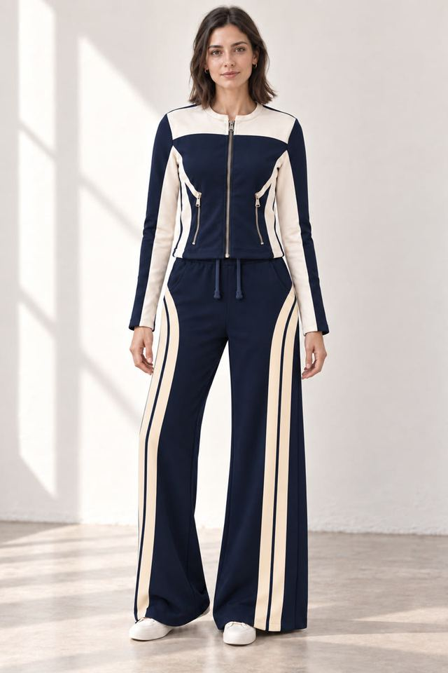
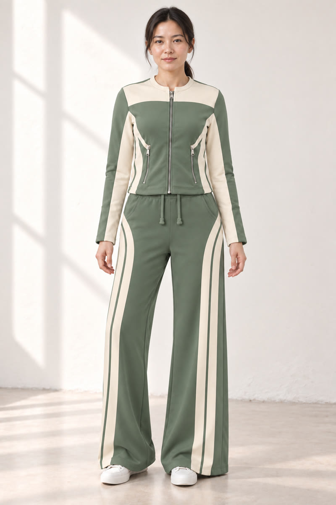
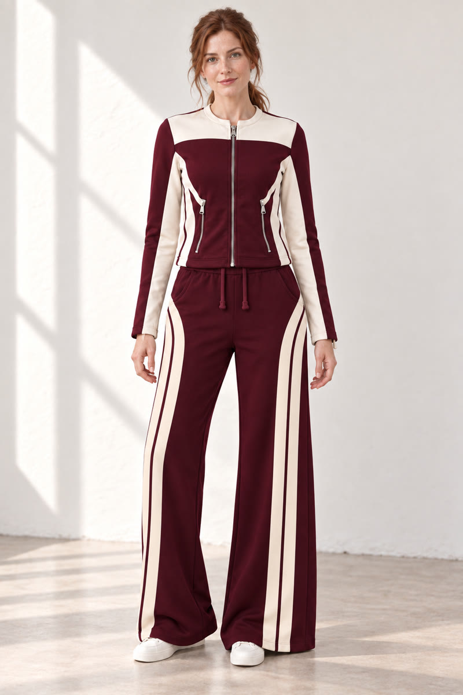
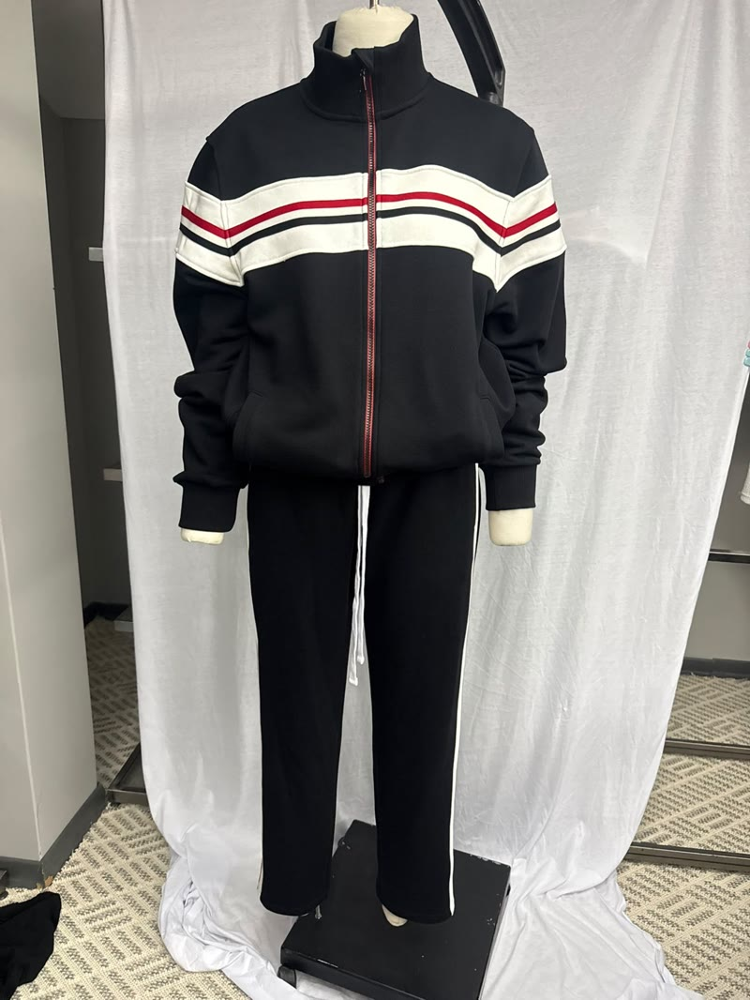
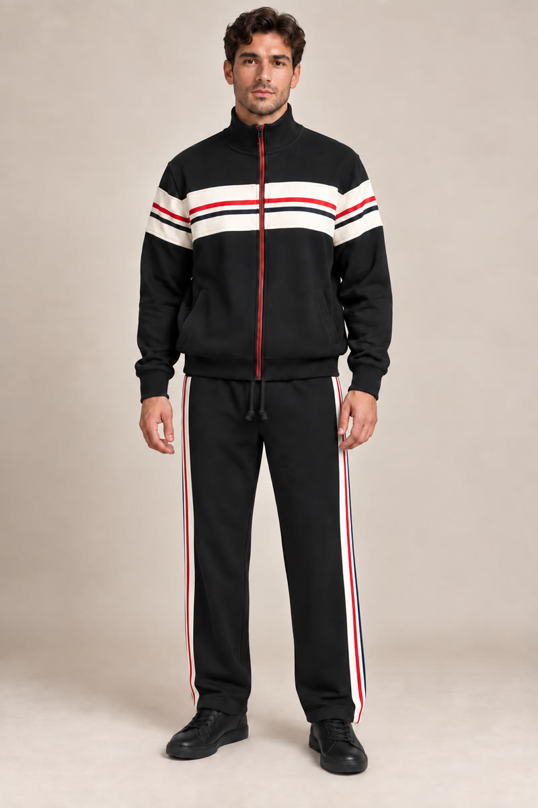
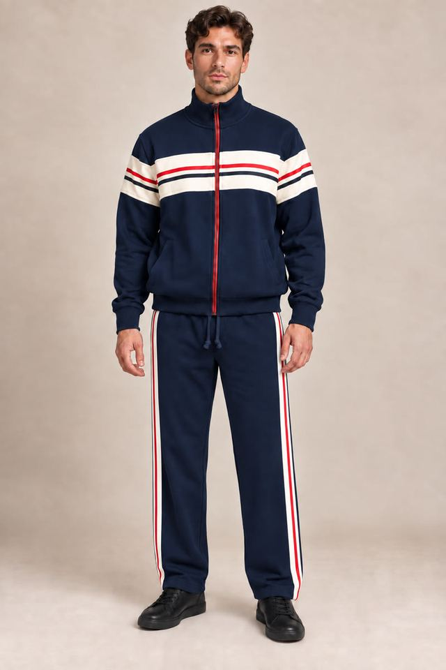

Müşteri işi
QUINZELL
Hayalet modelden moda filmine.
- Amaç ve fikir
- Hayalet model fotoğrafından yola çıkıp ürünü model üzerinde göstermek, renk seçeneklerini açmak ve aynı görselleri harekete taşımak. Model giydirme, renk çalışması ve video üretimi tek süreçte ilerliyor.
- MON’un üstlendiği işler
- Hayalet model fotoğraflarından ürünü model üzerinde görselleştirme, renk alternatifleri geliştirme ve görselleri videoya dönüştürme.
- Üretilen çıktılar ve formatlar
- Üç kısa moda filmi, model üzerinde ürün görselleri ve renk alternatifleri. Format: dikey film, dikey görsel.
- Statü
- Müşteri işi. Quinzell için hazırlandı.
Lacivert-krem takım




Şeritli eşofman takımı



